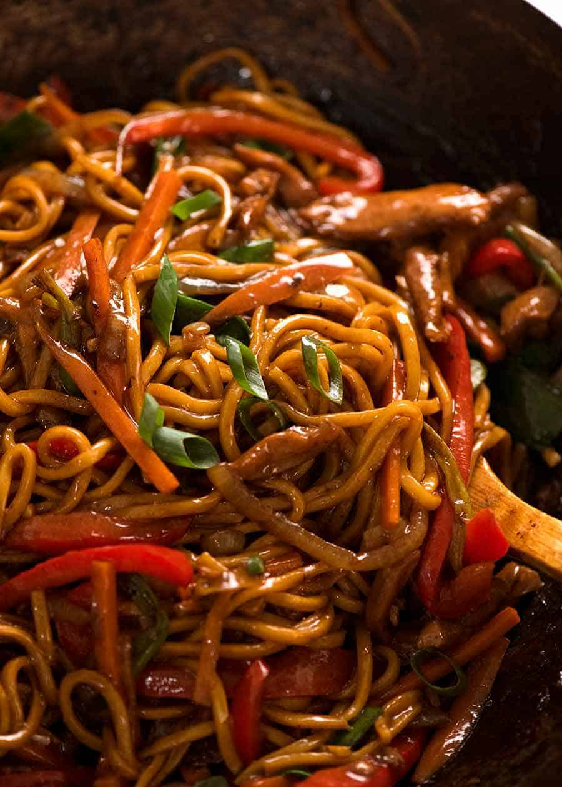

Noodles Sauce

Description
Noodles sauce, also known as pasta sauce or pasta topping, refers to a sauce or condiment that is
typically served with cooked noodles or pasta.
It is used to enhance the flavor, texture, and overall enjoyment of the dish.
Ingredient
- Spaghetti noodles
- Marinara sauce (store-bought or homemade)
- Salt for boiling water
- Optional: grated Parmesan cheese, fresh herbs for garnish
Steps
- Bring a large pot of salted water to a boil.
Add the spaghetti noodles and cook according to the package instructions until al dente.
- While the spaghetti is cooking, heat the marinara sauce in a separate saucepan over medium heat until warmed through.
- Once the spaghetti noodles are cooked, drain them in a colander.
- Return the drained spaghetti to the pot or transfer it to a serving dish.
- Pour the desired amount of marinara sauce over the cooked spaghetti, tossing well to coat the noodles evenly.
- Serve the spaghetti with marinara sauce hot, garnished with grated Parmesan cheese and fresh herbs if desired.